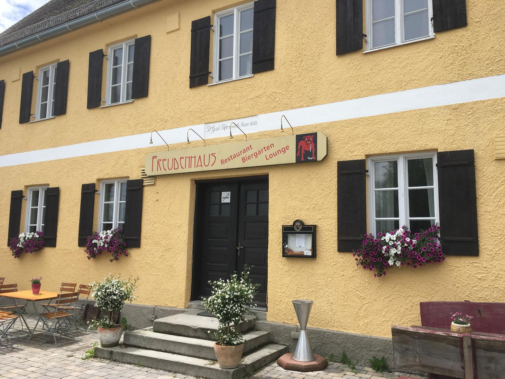

Liebe Freunde des Familienkreises Erdweg ⛪
Nachdem es doch schon wieder ein paar Jahre her ist, dass wir uns in größerer Runde getroffen haben, dachten wir uns: es wäre mal wieder an der Zeit. Dort, wo wir als Kinder Pfingsttreffen mit der Aschauer Rhythmusgruppe und manches weitere kirchliche Fest gefeiert und schöne Stunden miteinander verbracht haben.
Unser Familienkreis hat sich zwischen Kärnten und Sibirien, Bad Tölz, Dresden, dem Landkreis Ebersberg und Bonn in alle Winde zerstreut – wobei ein treuer Kern nach wie vor in der Heimat rund um den Petersberg verwurzelt ist. Umso schöner, dass wir uns wiedersehen. Und dass einige unserer Eltern auch dabei sein werden. 🤍
Wir freuen uns auf euch!
Barbara Kapfhammer-Murr · Barbara Rösch-Rupp
Brigitte Hermann (geb. Ulrich) · Marold Moosrainer
Programm
Ankommen & Ratschen
Treffen vor der Kirche – Wiedersehen, Reden, die Luft genießen.
Gottesdienst
In der romanischen Basilika St. Peter und Paul auf dem Petersberg – einer der ältesten Sakralbauten Altbayerns, erbaut 1104 von Benediktinermönchen. (Das wisst ihr natürlich längst. 😉)
Spaziergang nach Kleinberghofen
Ca. 2,5 km, ~45 Minuten – ins Gasthaus Freudenhaus.
Mittagessen im Gasthaus Freudenhaus
Kleinberghofen – Tisch reserviert ab 12:45 Uhr.
Das Wirtshaus gibt es seit 1820 — und Ludwig Thoma war als Rechtsanwalt in Dachau Stammgast. Bis heute erinnert ein Nebenzimmer an ihn.

Kaffee & Kuchen im Pfarrheim
Pfarrheim Kleinberghofen, wenige Minuten zu Fuß vom Gasthaus.
Lage & Route
Bitte an- oder abmelden
Damit wir die Platzzahl ans Gasthaus melden können:
bis 15. Juli 2026
Einfach einscannen und vorab an Barbara schicken: bkmurr@t-online.de